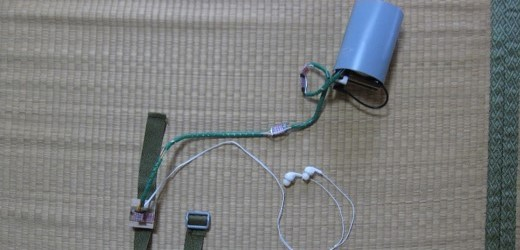
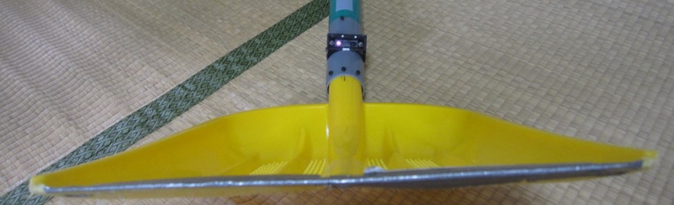
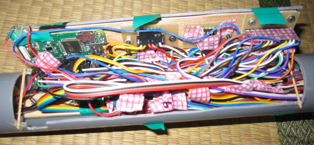
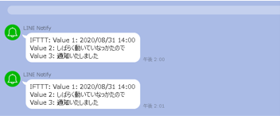

復旧作業中の二次災害を防ぎたい
災害復旧の現場で熱中症になる人の報道をきっかけに、作業中の負担軽減を目指すシャベル型デバイスを製作しました。シャベルと身体に装着するデバイスを組み合わせ、作業者に声で情報を伝えます。 この作品は、team phantomでの企画から製作まで私が担当しました。
握り方・姿勢・環境を計測
11個のタッチセンサーで握る位置を検出し、測距センサーでシャベル先端の積載量を計測。装着側の角度センサーで姿勢を捉え、温湿度の報告や動きが止まった際の呼びかけも行います。応答がない場合はLINEへ通知する仕組みも組み込みました。
二つの装置をつないだ結果
2台のRaspberry Pi ZeroをBluetoothで接続し、音声にはOpen JTalk、通知にはIFTTTを利用しました。充電時に柄を分解する必要があることや、装着機器が動きを妨げることが課題でした。iCAN国内予選4位、世界大会Third Prizeという結果を得ました。
制作の記録




